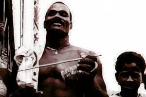

A Música na Nossa História
Música no Sudeste do Brasil é muito contagiante e há anos vem se destacando com muita cor e alegria, com a abolição da escravatura em 1888. Os Europeus trouxeram o erudito, a dança de salão e saraus e músicas religiosas e os responsórios dos índios. Através do misto de culturas temos o privilegio de conhecemos a nossa musica hoje.
A Primeira música Brasileira foi o Maxixa, uma melodia charmosa e melodramática, e que se tornou popular como o Choro. Que eram compostos por Violinistas, Flautistas e Cava quistas que apresentavam em comércios, como bares e casas de show da época.
- Fonte:
- Wikipédia
- Toda Máteria
- Lunetas
- Wikipédia